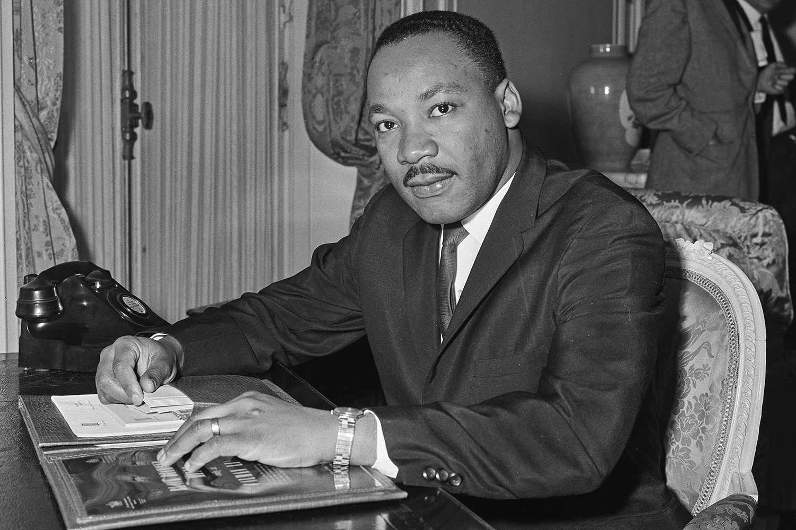
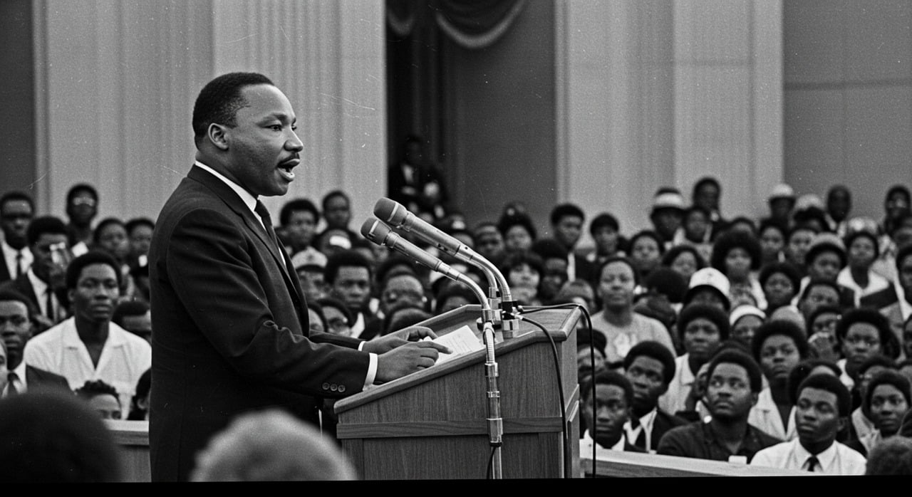

| inicio | logros | galerías | contacto |
Martin Luther King Jr. |
|||
Martin Luther King Jr., born on January 15, 1929, in the African-American neighborhood of Sweet Auburn in Atlanta, Georgia, was the most emblematic leader of the civil rights movement in the United States and one of the most influential advocates for equality of the twentieth century; coming from a deeply religious family committed to justice—son of pastor Martin Luther King Sr. and Alberta Williams King, and brother to Christine and A.D.—he grew up surrounded by teachings of faith, education, and social responsibility, which shaped his vision from an early age. He studied sociology at Morehouse College, then theology at Crozer Theological Seminary, and finally earned a doctorate at Boston University, becoming a pastor in 1954 at the Dexter Avenue Baptist Church in Montgomery, where he began organizing the African-American community to challenge the segregation laws of the South. His first major national impact came with the Montgomery Bus Boycott in 1955, which he led following the arrest of Rosa Parks, lasting 381 days until the Supreme Court declared bus segregation unconstitutional, establishing him as a national leader. Later, he founded the Southern Christian Leadership Conference (SCLC) to coordinate nonviolent protests across the country, inspired by Gandhi's philosophy of peaceful resistance, and from there he led key campaigns such as the Birmingham Campaign in 1963, where he faced arrests and police violence and wrote the influential “Letter from Birmingham Jail,” defending civil disobedience as a moral tool against injustice. That same year, he was one of the main organizers of the historic March on Washington, where he delivered his iconic “I Have a Dream” speech to over 250,000 people, becoming a global symbol of hope and equality. His activism was decisive in passing two of the most important civil rights laws in the United States: the Civil Rights Act of 1964—which prohibited segregation and workplace discrimination—and the Voting Rights Act of 1965, which guaranteed African Americans the right to vote, and for his leadership, he received the Nobel Peace Prize in 1964, becoming the youngest person at the time to receive it. |
|||
|  | |||
In 1944, at age 15, King entered Morehouse College in Atlanta under a special wartime program intended to boost enrollment by admitting promising high-school students like King. Before beginning college, however, King spent the summer on a tobacco farm in Connecticut; it was his first extended stay away from home and his first substantial experience of race relations outside the segregated South. He was shocked by how peacefully the races mixed in the North. “Negroes and whites go [to] the same church,” he noted in a letter to his parents. “I never [thought] that a person of my race could eat anywhere.” This summer experience in the North only deepened King’s growing hatred of racial segregation. At Morehouse, King favored studies in medicine and law, but these were eclipsed in his senior year by a decision to enter the ministry, as his father had urged. King’s mentor at Morehouse was the college president, Benjamin Mays, a social gospel activist whose rich oratory and progressive ideas had left an indelible imprint on King’s father. Committed to fighting racial inequality, Mays accused the African American community of complacency in the face of oppression, and he prodded the Black church into social action by criticizing its emphasis on the hereafter instead of the here and now; it was a call to service that was not lost on the teenage King. He graduated from Morehouse in 1948. |
|||
|  | |||